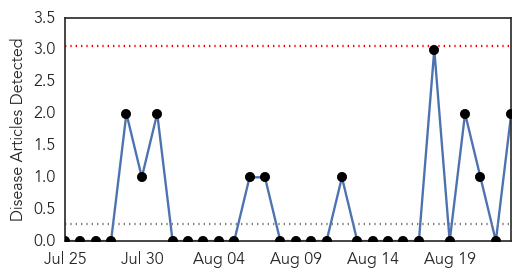
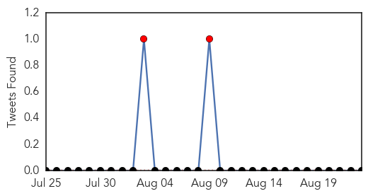
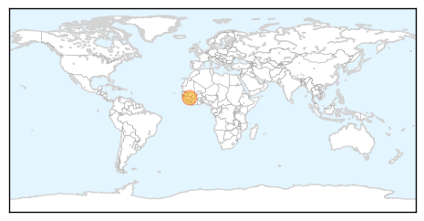
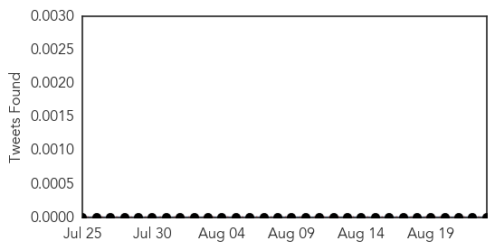
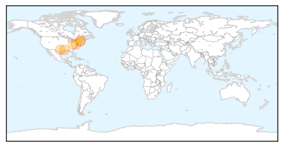
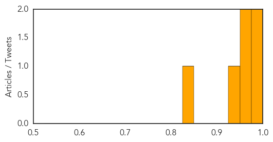

Hemmorhagic Fever
30-Day Web Trend
0 alerts, 0 warnings

30-Day Twitter Trend
3 alerts, 0 warnings

Article Locations
Article Confidences

Top Articles:
Top Tweets:
-
No tweets found for Aug 23, 2014
West Nile Virus
30-Day Web Trend
0 alerts, 0 warnings
30-Day Twitter Trend
0 alerts, 0 warnings

Article Locations
Article Confidences
Top Articles:
- 0.996
- West Nile Virus Hitting the United States Again
- 0.993
- Equine virus more dangerous than West Nile, but rare in humans
- 0.967
- Doctors Want North Texans To Know Dangers Of Chikungunya « CBS Dallas
- 0.954
- NH Dept. of Health and Human Services confirms first human case of Eastern Equine Encephalitis since 2009
- 0.929
- West Nile virus diagnosed in 60 year old from Middlesex County
- 0.846
- 2 viruses found in Cabell County mosquito pools
Top Tweets:
-
No tweets found for Aug 23, 2014